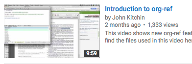

Authoring tools to automate data sharing in scientific publishing
\maketitle \tableofcontents
1 Title slide
2 Introduction
- Data sharing is not easy
- But it is increasingly required
- And increasingly desired
The big question is: "How do we make that happen?"
- Nobody wants more work
- We would all like to get more out of what we already do
- We are working on tools that make that happen that I will talk about today
3 Why is data sharing hard today?
- For many scientific authors data and analysis are not integrated into writing tools
- Think about a manuscript in MS Word/LaTeX
- Data in Excel, data files,…
- Plots in Origin/SigmaPlot/etc.
- Separate script files for analysis
- all with limited interconnectivity
- e.g. where is the data in Fig 2 of the manuscript?
- Where is the file/script that did the data analysis?
- How do I reuse the data in Table 2 for a new purpose? Copy and Paste?
- These tools are not especially well-integrated and not easily adapted to new use cases
4 Sharing is tedious, error prone
- Sharing then becomes extra work to generate supporting information that reconstructs the effort, copies data you think you used, etc.
- Reconstruction of the work that went into the manuscript is error prone
- and tedious…
- Reuse is not much better
- Yet increasingly required, and desired
5 Our approach to this issue is integration of tools/data
- We developed an integrated set of tools that makes data/code/analysis part of the manuscript preparation/submission process could help with data sharing
- It would leverage the work we already do in scientific writing
- and provide access to reusable data/code
- This does require development of a relatively new tool chain for writing
- We have done this in Emacs + org-mode + code
- It is all open-source (http://github.com/jkitchin/jmax) and cross-platform
6 Emacs + org-mode for reproducible, functional scientific documents
- org-mode is basically a plain text markup language deeply integrated into Emacs (an editor)
- Outline mode at the core, and much much more
6.1 sub-heading
- Narrative text, equations \(\int_0^1 e^x dx\), images

6.1.1 sub-sub-heading
Functional tables
| a | b |
|---|---|
| 2 | 4 |
| 0 | 1 |
- citations kitchin-2015-examp
- Integrated functional code
date
RESULTS: Mon Mar 14 13:11:05 PDT 2016
- Functional links that can
- Open document locations

- Open mail, news, urls
- run user-defined code in almost any language
- Open document locations
import time print(time.asctime())
RESULTS: Mon Mar 14 13:11:36 2016
(current-time-string)
RESULTS: Mon Mar 14 13:11:45 2016
Sys.time()
RESULTS: [1] "2016-03-14 13:11:51 PDT"
#include <time.h> #include <stdlib.h> #include <stdio.h> int main() { time_t current_time; char* c_time_string; current_time = time(NULL); /* Convert to local time format. */ c_time_string = ctime(¤t_time); printf("%s", c_time_string); return 0; }
RESULTS: Mon Mar 14 13:11:56 2016
7 We have used it extensively in scientific publishing
- Over dozen papers in print by my group illustrating what can be done
- hallenbeck-2013-effec-o2 - all experimental
- miller-2014-simul-temper - mixed experiment/computation
- xu-2014-relat - computational DFT on oxides
- xu-2014-probin-cover - computational coverage/site dependence
- curnan-2014-effec-concen - full sql database described in SI
- boes-2015-estim-bulk - exp/computation H2/D2 exchange on CuPd
- boes-2015-core-cu - exp/computation XPS on CuPd alloys
- xu-2015-linear-respon - 1.8 GB dataset on Zenodo
- xu-2015-accur-u - computation DFT+U
- kitchin-2015-data-surfac-scien - examples of reusing data
- kitchin-2015-examp - examples of reusing data
- boes-2016-neural-networ - Molecular simulation
Let's see a working example
- mehta-2015-ident-poten The data is available in the SI
- The json database described in SI
- The source can be extracted from the PDF (goto line 336)
pdftk am4059149_si_001.pdf unpack_files
That SI file was generated here (goto line 336): supporting-information.html
8 Reusing the data
That data is human readable - and machine addressable
(remove-if-not (lambda (x) (string= "rutile" (nth 1 x))) data)
| TiO\(_2\) | rutile | LDA | -2801.64 | 30.58 | 259.47 |
| TiO\(_2\) | rutile | AM05 | -2733.53 | 31.31 | 233.2 |
| TiO\(_2\) | rutile | PBEsol | -2759.29 | 31.22 | 239.76 |
| TiO\(_2\) | rutile | PBE | -2773.21 | 32.11 | 215.78 |
If you prefer Python, no problem. Here we get the anatase data:
return [x for x in data if x[1] == 'anatase']
| TiO\(_2\) | anatase | LDA | -2802.73 | 33.62 | 187.4 |
| TiO\(_2\) | anatase | AM05 | -2741.12 | 34.33 | 178.26 |
| TiO\(_2\) | anatase | PBEsol | -2763.61 | 34.25 | 178.71 |
| TiO\(_2\) | anatase | PBE | -2781.16 | 35.13 | 171.42 |
9 Automating data embedding sharing
- org-mode is great - If you use org-mode
- In an Appendix there is code that automatically embeds data and code in org-mode into HTML and PDF.
- One source to many outputs
- We can extract the source code and load it here
(org-babel-tangle)
(load-file "data-sharing.el")
9.1 HTML export
9.2 PDF export
9.3 Vanilla export
10 What makes this integration possible?
- An extensible editor
- Extensible in a full programming language
- This allows the tool to become what you want
- Emacs is ideal for this
- A lightweight markup language
- to differentiate text, code, data
- Org-mode is also ideal for this
- Part structured markup, part api
- Very good compromise on function and utility with authoring ease
- </code> Since we use code to generate and analyse data, this solution works especially well
11 Concluding thoughts
- Emacs + org-mode + </code> enables a lot of very exciting capabilities in publishing and data sharing
- Integrated narrative text, data, code
- Export to a broad range of other formats
- Interaction with the world (other computers, instruments) via APIs
- Materials Project, translation, Internet of Things, …
- The future is very exciting
- We are not waiting for someone to figure out what we want
- Anyway, by the time they deliver it we will need something else ;)
12 Extract the references
(save-window-excursion (save-restriction (widen) (org-ref-bibliography) (buffer-string)))
1. cite:kitchin-2015-examp Kitchin, John R., "Examples of Effective Data Sharing in Scientific Publishing", ACS Catalysis, 5:3894-3899 (2015)
2. cite:hallenbeck-2013-effec-o2 Hallenbeck, Alexander P. and Kitchin, John R., "Effects of \ce{O_2} and \ce{SO_2} on the Capture Capacity of a Primary-Amine Based Polymeric \ce{CO_2} Sorbent", Industrial \& Engineering Chemistry Research, 52:10788-10794 (2013)
3. cite:miller-2014-simul-temper Spencer D. Miller and Vladimir V. Pushkarev and Andrew J. Gellman and John R. Kitchin, "Simulating Temperature Programmed Desorption of Oxygen on {P}t(111) Using {DFT} Derived Coverage Dependent Desorption Barriers", Topics in Catalysis, 57:106-117 (2014)
4. cite:xu-2014-relat Zhongnan Xu and John R. Kitchin, "Relating the Electronic Structure and Reactivity of the 3d Transition Metal Monoxide Surfaces", Catalysis Communications, 52:60-64 (2014)
5. cite:xu-2014-probin-cover Zhongnan Xu and John R. Kitchin, "Probing the Coverage Dependence of Site and Adsorbate Configurational Correlations on (111) Surfaces of Late Transition Metals", J. Phys. Chem. C, 118:25597-25602 (2014)
6. cite:curnan-2014-effec-concen Curnan, Matthew T. and Kitchin, John R., "Effects of Concentration, Crystal Structure, Magnetism, and Electronic Structure Method on First-Principles Oxygen Vacancy Formation Energy Trends in Perovskites", The Journal of Physical Chemistry C, 118:28776-28790 (2014)
7. cite:boes-2015-estim-bulk Jacob R. Boes and Gamze Gumuslu and James B. Miller and Andrew J. Gellman and John R. Kitchin, "Estimating Bulk-Composition-Dependent \ce{H2} Adsorption Energies on \ce{Cu_{x}Pd_{1-x}} Alloy (111) Surfaces", ACS Catalysis, 5:1020-1026 (2015)
8. cite:boes-2015-core-cu Jacob R. Boes and Peter Kondratyuk and Chunrong Yin and James B. Miller and Andrew J. Gellman and John R. Kitchin, "Core Level Shifts in {Cu-Pd} Alloys As a Function of Bulk Composition and Structure", Surface Science, 640:127-132 (2015)
9. cite:xu-2015-linear-respon Xu, Zhongnan and Rossmeisl, Jan and Kitchin, John R., "A Linear Response {DFT}+{U} Study of Trends in the Oxygen Evolution Activity of Transition Metal Rutile Dioxides", The Journal of Physical Chemistry C, 119:4827-4833 (2015)
10. cite:xu-2015-accur-u Xu, Zhongnan and Joshi, Yogesh V. and Raman, Sumathy and Kitchin, John R., "Accurate Electronic and Chemical Properties of 3d Transition Metal Oxides Using a Calculated Linear Response {U} and a {DFT + U(V)} Method", The Journal of Chemical Physics, 142:144701 (2015)
11. cite:kitchin-2015-data-surfac-scien John R. Kitchin, "Data Sharing in Surface Science", Surface Science , N/A:in press (2015)
12. cite:boes-2016-neural-networ Jacob R. Boes and Mitchell C. Groenenboom and John A. Keith and John R. Kitchin, "Neural Network and Reaxff Comparison for {Au} Properties", Accepted 1/2016, Int. J. Quantum Chemistry, : (2016)
13. cite:mehta-2015-ident-poten Prateek Mehta and Paul A. Salvador and John R. Kitchin, "Identifying Potential \ce{BO2} Oxide Polymorphs for Epitaxial Growth Candidates", ACS Appl. Mater. Interfaces, 6:3630-3639 (2015)
14. cite:pakin-attachfile Scott Pakin, "attachfile", , : ()
13 Getting started
Source code: http://github.com/jkitchin/jmax
Our starter-kit for Emacs + org-mode configured to do the things I showed you today Should work out of the box on Windows. Directions for using it on Mac/Linux.
Kitchingroup blog: http://kitchingroup.cheme.cmu.edu
@johnkitchin
Check out our YouTube channel: https://www.youtube.com/user/jrkitchin
 1333 views (1800+ downloads of org-ref on MELPA!)
 20,984 views
20,984 views
23,094 views!
This talk: https://github.com/jkitchin/ACS-2016-data-sharing
14 Appendix
14.1 The custom export code \label{export-code}
Here we define a custom table exporter. We use the regular table export mechanism, but save the contents of the table as a csv file. We define exports for two backends: LaTeX and HTML. For LaTeX, we use the attachfile pakin-attachfile package to embed the data file in the PDF. For HTML, we insert a link to the data file, and a data uri link to the HTML output. We store the filename of each generated table in a global variable named *embedded-files* so we can create a new Info metadata entry in the exported PDF.
(defvar *embedded-files* '() "List of files embedded in the output.") (defun my-table-format (table contents info) (let* ((tblstart (org-element-property :contents-begin table)) (tbl-data (save-excursion (goto-char tblstart) (org-babel-del-hlines (org-babel-read-table)))) (tblname (or (org-element-property :name table) (md5 (format "%s" tbl-data)))) (format (elt (plist-get info :back-end) 2)) (csv-file (concat tblname ".csv")) (data-uri-data)) ;; Here we convert the table data to a csv file (with-temp-file csv-file (loop for row in tbl-data do (insert (mapconcat (lambda (x) (format "\"%s\"" x)) row ", " )) (insert "\n")) (setq data-uri-data (base64-encode-string (buffer-string)))) (add-to-list '*embedded-files* csv-file) (cond ;; HTML export ((eq format 'html) (concat (org-html-table table contents info) (format "<a href=\"%s\">%s</a>" csv-file csv-file) " " (format (concat "<a href=\"data:text/csv;" "charset=US-ASCII;" "base64,%s\">data uri</a>") data-uri-data))) ;; LaTeX/PDF export ((eq format 'latex) (concat (org-latex-table table contents info) "\n" (format "%s: \\attachfile{%s}" csv-file csv-file))))))
Next, we define an exporter for source blocks. We will write these to a file too, and put links to them in the exported files. We store the filename of each generated source file in a global variable named *embedded-files* so we can create a new Info metadata entry in the exported PDF.
(defun my-src-block-format (src-block contents info) "Custom export for src-blocks. Saves code in block for embedding. Provides backend-specific output." (let* ((srcname (org-element-property :name src-block)) (lang (org-element-property :language src-block)) (value (org-element-property :value src-block)) (format (elt (plist-get info :back-end) 2)) (exts '(("python" . ".py") ("emacs-lisp" . ".elisp") ("C" . ".c") ("R" . ".R"))) (fname (concat (or srcname (md5 value)) (cdr (assoc lang exts)))) (data-uri-data)) (with-temp-file fname (insert value) (setq data-uri-data (base64-encode-string (buffer-string)))) (add-to-list '*embedded-files* fname) (cond ;; HTML export ((eq format 'html) (concat (org-html-src-block src-block contents info) (format "<a href=\"%s\">%s</a>" fname fname) " " (format (concat "<a href=\"data:text/%s;" "charset=US-ASCII;base64," "%s\">code uri</a>") lang data-uri-data))) ;; LaTeX/PDF export ((eq format 'latex) (concat (org-latex-src-block src-block contents info) "\n" (format "%s: \\attachfile{%s}" fname fname))))))
Finally, we also modify the results of a code block so they will appear in a gray box and stand out from the text more clearly.
(defun my-results (fixed-width contents info) "Transform a results block to make it more visible." (let ((results (org-element-property :results fixed-width)) (format (elt (plist-get info :back-end) 2)) (value (org-element-property :value fixed-width))) (cond ((eq 'latex format) (format "\\begin{tcolorbox} \\begin{verbatim} RESULTS: %s \\end{verbatim} \\end{tcolorbox}" value)) (t (format "<pre>RESULTS: %s</pre>" value)))))
RESULTS: my-results
An author may also choose to embed a file into their document, using the attachfile package for LaTeX. Here, we leverage the ability of org-mode to create functional links that can be exported differently for LaTeX and HTML. We will create an attachfile link, and set it up to export as a LaTeX command or as a data URI for HTML.
(org-add-link-type "attachfile" (lambda (path) (org-open-file path)) ;; formatting (lambda (path desc format) (cond ((eq format 'html) ;; we want a data URI to the file name (let* ((content (with-temp-buffer (insert-file-contents path) (buffer-string))) (data-uri (base64-encode-string (encode-coding-string content 'utf-8)))) (add-to-list '*embedded-files* path) (format (concat "<a href=\"data:;base64," "%s\">%s</a>") data-uri path))) ((eq format 'latex) ;; write out the latex command (add-to-list '*embedded-files* path) (format "\\attachfile{%s}" path)))))
Here, we define a derived backend for HTML and LaTeX export. These are identical to the standard export backends, except for the modified behavior of the table and src-block elements.
(org-export-define-derived-backend 'my-html 'html :translate-alist '((table . my-table-format) (src-block . my-src-block-format) (fixed-width . my-results))) (org-export-define-derived-backend 'my-latex 'latex :translate-alist '((table . my-table-format) (src-block . my-src-block-format) (fixed-width . my-results)))
(defun custom-export-and-open-html () "Use my-html custom exporter and open the file." (let* ((base (file-name-nondirectory (file-name-sans-extension (buffer-file-name)))) (html (concat base ".html"))) (save-restriction (widen) (browse-url (org-export-to-file 'my-html html))))) (defun custom-export-and-open-pdf () "Use my-latex custom exporter and open pdf." (save-restriction (widen) (let* ((org-latex-image-default-width "") (*embedded-files* '()) (base (file-name-nondirectory (file-name-sans-extension (buffer-file-name)))) (tex (concat base ".tex")) (pdf (concat base ".pdf")) (org-latex-minted-options (append org-latex-minted-options '(("xleftmargin" "\\parindent"))))) (org-export-to-file 'my-latex tex) (ox-manuscript-latex-pdf-process tex) (org-open-file pdf))))
Bibliography
- [kitchin-2015-examp] Kitchin, Examples of Effective Data Sharing in Scientific Publishing, ACS Catalysis, 5(6), 3894-3899 (2015). link. doi.
- [hallenbeck-2013-effec-o2] "Hallenbeck & Kitchin, Effects of \ceO_2 and \ceSO_2 on the Capture Capacity of a Primary-Amine Based Polymeric \ceCO_2 Sorbent, "Industrial & Engineering Chemistry Research", 52(31), 10788-10794 (2013). link. doi.
- [miller-2014-simul-temper] Spencer Miller, Vladimir Pushkarev, Andrew, Gellman & John Kitchin, Simulating Temperature Programmed Desorption of Oxygen on Pt(111) Using DFT Derived Coverage Dependent Desorption Barriers, Topics in Catalysis, 57(1-4), 106-117 (2014). link. doi.
- [xu-2014-relat] Zhongnan Xu & John Kitchin, Relating the Electronic Structure and Reactivity of the 3d Transition Metal Monoxide Surfaces, Catalysis Communications, 52, 60-64 (2014). link. doi.
- [xu-2014-probin-cover] Zhongnan Xu & John Kitchin, Probing the Coverage Dependence of Site and Adsorbate Configurational Correlations on (111) Surfaces of Late Transition Metals, J. Phys. Chem. C, 118(44), 25597-25602 (2014). link. doi.
- [curnan-2014-effec-concen] Curnan & Kitchin, Effects of Concentration, Crystal Structure, Magnetism, and Electronic Structure Method on First-Principles Oxygen Vacancy Formation Energy Trends in Perovskites, The Journal of Physical Chemistry C, 118(49), 28776-28790 (2014). link. doi.
- [boes-2015-estim-bulk] Jacob Boes, Gamze Gumuslu, James Miller, Andrew, Gellman & John Kitchin, Estimating Bulk-Composition-Dependent \ceH2 Adsorption Energies on \ceCu_xPd_1-x Alloy (111) Surfaces, ACS Catalysis, 5, 1020-1026 (2015). link. doi.
- [boes-2015-core-cu] Jacob Boes, Peter Kondratyuk, Chunrong Yin, James, Miller, Andrew Gellman & John Kitchin, Core Level Shifts in Cu-Pd Alloys As a Function of Bulk Composition and Structure, Surface Science, 640, 127-132 (2015). link. doi.
- [xu-2015-linear-respon] Xu, Rossmeisl & Kitchin, A Linear Response DFT+U Study of Trends in the Oxygen Evolution Activity of Transition Metal Rutile Dioxides, The Journal of Physical Chemistry C, 119(9), 4827-4833 (2015). link. doi.
- [xu-2015-accur-u] "Xu, Joshi, Raman, & Kitchin, Accurate Electronic and Chemical Properties of 3d Transition Metal Oxides Using a Calculated Linear Response U and a DFT + U(V) Method, "The Journal of Chemical Physics", 142(14), 144701 (2015). link. doi.
- [kitchin-2015-data-surfac-scien] "John Kitchin", Data Sharing in Surface Science, "Surface Science ", N/A, in press (2015). link. doi.
- [boes-2016-neural-networ] Jacob Boes, Mitchell Groenenboom, John Keith, & John Kitchin, Neural Network and Reaxff Comparison for Au Properties, Accepted 1/2016, Int. J. Quantum Chemistry, , (2016).
- [mehta-2015-ident-poten] Prateek Mehta, Paul Salvador & John Kitchin, Identifying Potential \ceBO2 Oxide Polymorphs for Epitaxial Growth Candidates, ACS Appl. Mater. Interfaces, 6(5), 3630-3639 (2015). link. doi.
- [pakin-attachfile] @miscpakin-attachfile, Url = http://www.ctan.org/tex-archive/macros/latex/contrib/attachfile, Howpublished = http://www.ctan.org/tex-archive/macros/latex/contrib/attachfile, Author = Scott Pakin, Title = attachfile, Note = v1.5b